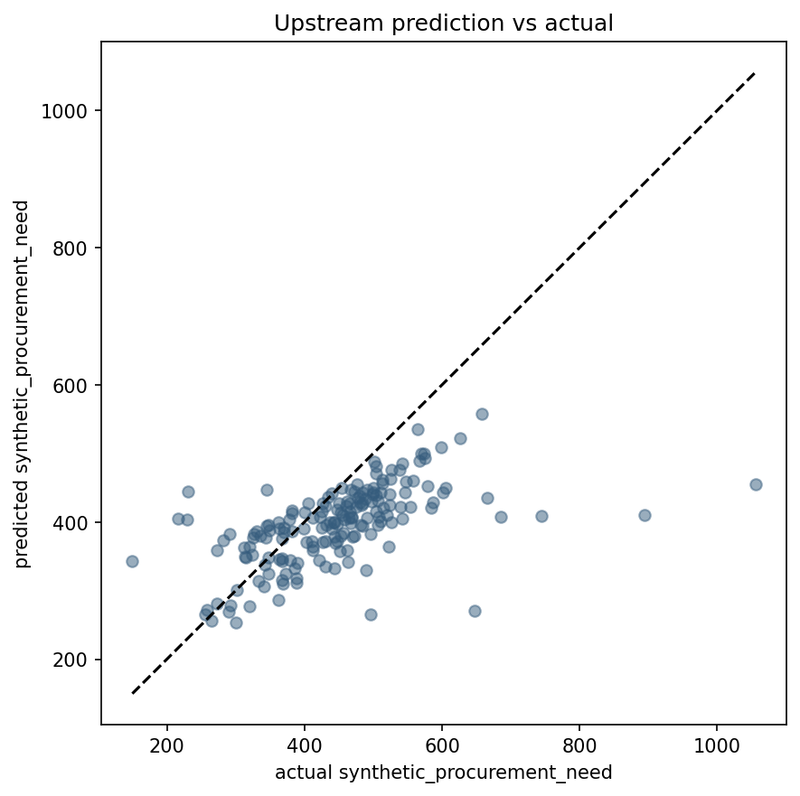
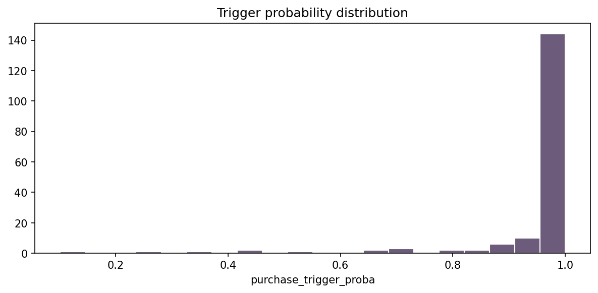
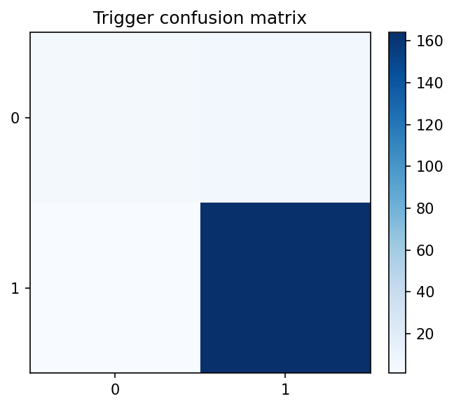
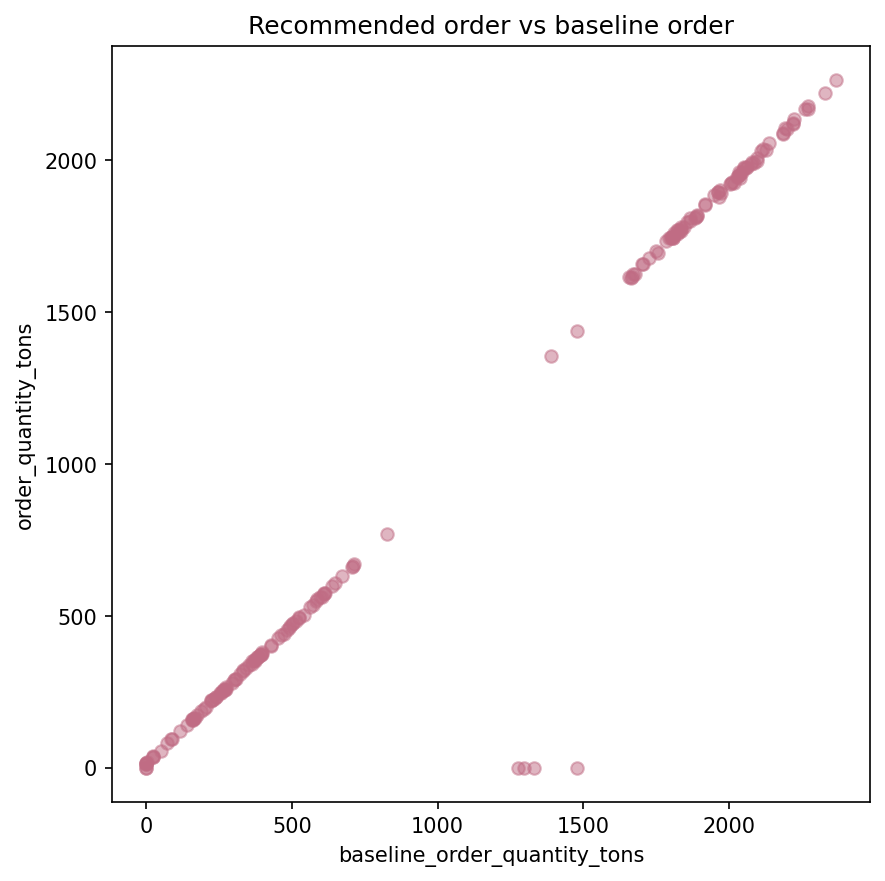
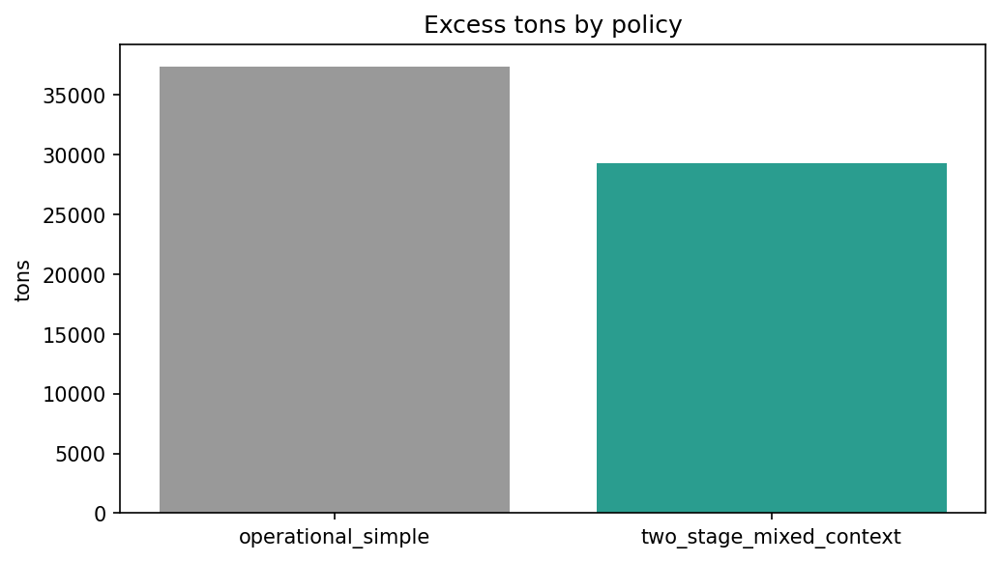
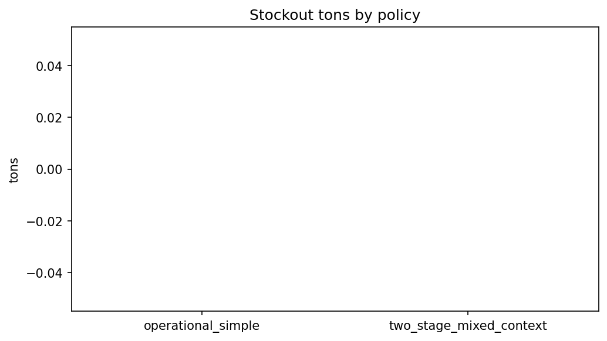
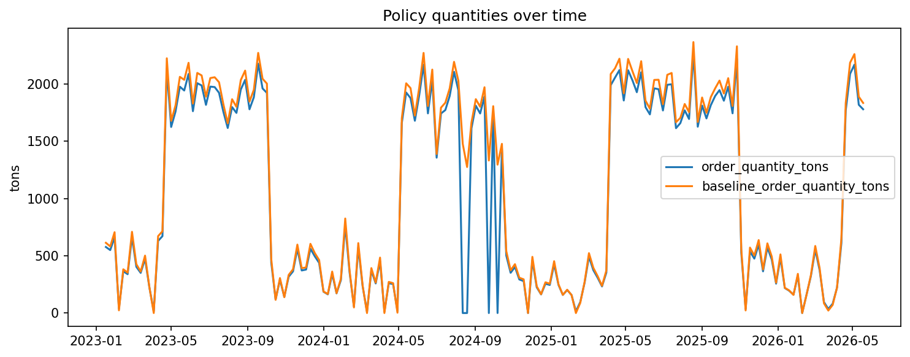

# CU28 mixed_context - Training and Policy Results EDA Notebook narrativo de auditoria para el scope `mixed_context`.
## Objetivo Visualizar resultados de entrenamiento, trigger, optimizador y simulacion de politica para la ruta mixed_context, distinguiendo claramente metricas de validacion funcional parcial en simulacion.
## Alcance Este analisis describe la ruta oficial reproducible `mixed_context`. Las senales externas se tratan como contexto/proxy. Las variables internas de planta siguen siendo sinteticas salvo carga posterior de cliente.
## Inputs
- `models/metrics/summary/baseline_comparison_latest__mixed_context.json`
- `models/metrics/summary/neuroevolution_comparison_latest__mixed_context.json`
- `models/metrics/summary/trigger_metrics_latest__mixed_context.json`
- `models/metrics/summary/quantity_optimizer_latest__mixed_context.json`
- `models/metrics/summary/policy_simulation_latest__mixed_context.json`
- `models/metrics/summary/metrics_summary__mixed_context.json`
- `data/predictions/predictions_latest__mixed_context.csv`
- `data/splits/baseline/default__mixed_context/test.csv`
## Outputs esperados
- `reports/tables/eda/training_metrics_summary__mixed_context.csv`
- `reports/tables/eda/policy_metrics_summary__mixed_context.csv`
- `reports/tables/eda/trigger_confusion_matrix__mixed_context.csv`
- `reports/figures/eda/upstream_prediction_vs_actual__mixed_context.png`
- `reports/figures/eda/trigger_probability_distribution__mixed_context.png`
- `reports/figures/eda/trigger_confusion_matrix__mixed_context.png`
- `reports/figures/eda/order_quantity_vs_baseline__mixed_context.png`
- `reports/figures/eda/excess_by_policy__mixed_context.png`
- `reports/figures/eda/stockout_by_policy__mixed_context.png`
- `reports/figures/eda/policy_timeseries__mixed_context.png`
## Limitaciones Este notebook documenta evidencia reproducible del pipeline oficial, pero no sustituye la revision de codigo, la auditoria de datos de origen ni una certificacion operacional de planta.
from pathlib import Path
import json
import numpy as np
import pandas as pd
import matplotlib
matplotlib.use("Agg")
import matplotlib.pyplot as plt
from src.reproducibility.notebook_support import (
detect_temporal_columns,
ensure_eda_dirs,
execution_metadata,
first_valid_temporal_range,
load_source_manifests,
load_tabular_file,
parse_markdown_table,
print_frame,
print_series,
project_root,
read_json,
relative_to_root,
save_figure,
save_table,
sha256_file,
)
NOTEBOOK_NAME = "07_training_and_policy_results_eda.ipynb"
PROJECT_ROOT = project_root()
SCOPE = globals().get("scope", "mixed_context")
REPORT_DIRS = ensure_eda_dirs()
META = execution_metadata(SCOPE)
FIGURES = []
TABLES = []
print(json.dumps(META, indent=2))
{
"scope": "mixed_context",
"executed_at_utc": "2026-06-17T10:30:09.435090+00:00",
"commit": "b2fc273adf68c17087b4637655067bc80d417fa9"
}
## Carga de datos Las siguientes celdas cargan los artefactos de entrada y muestran verificaciones intermedias antes de producir tablas y graficas.
metrics_root = PROJECT_ROOT / "models/metrics/summary"
baseline_metrics = read_json(metrics_root / "baseline_comparison_latest__mixed_context.json")
neuro_metrics = read_json(metrics_root / "neuroevolution_comparison_latest__mixed_context.json")
trigger_metrics = read_json(metrics_root / "trigger_metrics_latest__mixed_context.json")
quantity_metrics = read_json(metrics_root / "quantity_optimizer_latest__mixed_context.json")
policy_metrics = read_json(metrics_root / "policy_simulation_latest__mixed_context.json")
metrics_summary = read_json(metrics_root / "metrics_summary__mixed_context.json")
predictions = pd.read_csv(PROJECT_ROOT / "data/predictions/predictions_latest__mixed_context.csv")
test_df = pd.read_csv(PROJECT_ROOT / "data/splits/baseline/default__mixed_context/test.csv")
predictions["date"] = pd.to_datetime(predictions["date"], errors="coerce")
test_df["date"] = pd.to_datetime(test_df["date"], errors="coerce")
print(predictions.shape)
print_frame("Predictions preview", predictions.head(10))
(175, 20)
Predictions preview
date raw_material_id destination_profile scenario_name current_inventory_tons expected_requirement_tons lead_time_days safety_coverage_days expected_yield_rate expected_waste_rate synthetic_procurement_need synthetic_procurement_need_pred purchase_trigger_proba purchase_trigger_flag quantity_optimizer_recommendation_tons baseline_order_quantity_tons order_quantity_tons replenishment_gap_tons unit_purchase_cost shelf_life_days
2023-01-16 rm_cured_embutido cured_embutido test_split 3132.270015 1953.025197 9 6.0 0.79 0.031 573.412410 500.091729 0.999915 1 576.922301 613.523207 576.922301 494.776780 1000.0 28.0
2023-01-23 rm_cured_embutido cured_embutido test_split 3277.587183 2017.550842 9 6.0 0.79 0.031 564.216238 534.993676 0.999827 1 549.792254 581.923261 549.792254 469.292952 1000.0 28.0
2023-01-30 rm_cured_embutido cured_embutido test_split 3042.041265 1944.614874 9 6.0 0.79 0.031 605.524465 449.867608 0.999969 1 661.428538 706.039085 661.428538 569.386359 1000.0 28.0
2023-02-06 rm_cured_embutido cured_embutido test_split 3759.228064 2034.419949 9 6.0 0.79 0.031 456.805160 384.280445 0.944183 1 38.512170 23.535711 38.512170 18.980412 1000.0 28.0
2023-02-13 rm_cured_embutido cured_embutido test_split 3332.762565 1960.568771 9 6.0 0.79 0.031 519.631098 410.651497 0.999046 1 365.134302 382.284219 365.134302 308.293725 1000.0 28.0
2023-02-20 rm_cured_embutido cured_embutido test_split 3432.257833 2001.424870 9 6.0 0.79 0.031 506.704223 395.785645 0.998360 1 339.348672 352.995845 339.348672 284.674069 1000.0 28.0
2023-02-27 rm_cured_embutido cured_embutido test_split 2991.163097 1918.757538 9 6.0 0.79 0.031 584.338111 420.677207 0.999974 1 663.603639 709.582262 663.603639 572.243759 1000.0 28.0
2023-03-06 rm_cured_embutido cured_embutido test_split 3138.786071 1875.492096 9 6.0 0.79 0.031 553.675852 422.089249 0.999635 1 403.718746 426.895641 403.718746 344.270678 1000.0 28.0
2023-03-13 rm_cured_embutido cured_embutido test_split 3594.311434 2092.964770 9 6.0 0.79 0.031 524.189340 425.298665 0.997459 1 350.628370 362.852693 350.628370 292.623140 1000.0 28.0
2023-03-20 rm_cured_embutido cured_embutido test_split 3257.349442 1971.742849 9 6.0 0.79 0.031 557.586774 460.310094 0.999701 1 474.586079 501.528795 474.586079 404.458706 1000.0 28.0
merged = predictions.merge(
test_df[["date", "raw_material_id", "destination_profile", "synthetic_procurement_need", "purchase_trigger_label", "quantity_optimizer_target_tons"]],
on=["date", "raw_material_id", "destination_profile", "synthetic_procurement_need"],
how="left",
)
upstream_summary = pd.DataFrame(
[
{
"model_family": metrics_summary["upstream"]["baseline_reference_run"]["model_family"],
"feature_set": metrics_summary["upstream"]["baseline_reference_run"]["feature_set"],
"validation_rmse": metrics_summary["upstream"]["baseline_reference_run"]["validation_rmse"],
"test_rmse": metrics_summary["upstream"]["baseline_reference_run"]["test_rmse"],
"recommendation": metrics_summary["upstream"]["recommendation"],
}
]
)
print_frame("Upstream summary", upstream_summary)
display(upstream_summary)
Upstream summary
model_family feature_set validation_rmse test_rmse recommendation
linear_regression ablation_reduced_context 76.474697 105.671027 baseline_retained
| model_family | feature_set | validation_rmse | test_rmse | recommendation |
|---|---|---|---|---|
| linear_regression | ablation_reduced_context | 76.474697 | 105.671027 | baseline_retained |
trigger_summary = pd.DataFrame(
[
{
"split": split_name,
"accuracy": trigger_metrics[split_name]["accuracy"],
"precision": trigger_metrics[split_name]["precision"],
"recall": trigger_metrics[split_name]["recall"],
"false_negative_rate": trigger_metrics[split_name]["false_negative_rate"],
}
for split_name in ["train", "validation", "test"]
]
)
quantity_summary = pd.DataFrame(
[
{
"split": split_name,
"mae": quantity_metrics[split_name]["mae"],
"rmse": quantity_metrics[split_name]["rmse"],
"r2": quantity_metrics[split_name]["r2"],
}
for split_name in ["train", "validation", "test"]
]
)
print_frame("Trigger summary", trigger_summary)
print_frame("Quantity summary", quantity_summary)
Trigger summary
split accuracy precision recall false_negative_rate
train 0.951970 0.974118 0.936652 0.063348
validation 0.936782 0.952000 0.959677 0.040323
test 0.960000 0.964706 0.993939 0.006061
Quantity summary
split mae rmse r2
train 3.999465 6.635768 0.999726
validation 12.900122 19.703368 0.999272
test 31.064144 37.095734 0.997874
## Validaciones funcionales Antes de leer las figuras, se revisan resumenes de metrica por etapa y se comprueba que las predicciones se pueden alinear con el test split para una evaluacion final separada de la seleccion.
## Analisis de predicciones y trigger En esta seccion se relacionan probabilidades, etiquetas observadas y cantidades recomendadas para evaluar la politica frente al baseline.
probability_summary = predictions["purchase_trigger_proba"].describe().reset_index()
probability_summary.columns = ["metric", "value"]
trigger_activation = pd.DataFrame(
[
{
"activation_rate": float(predictions["purchase_trigger_flag"].mean()),
"zero_orders_when_no_trigger": bool((predictions.loc[predictions["purchase_trigger_flag"] == 0, "order_quantity_tons"] == 0.0).all()),
}
]
)
print_frame("Probability summary", probability_summary)
print_frame("Trigger activation summary", trigger_activation)
Probability summary
metric value
count 175.000000
mean 0.952011
std 0.132940
min 0.101689
25% 0.976222
50% 0.997459
75% 0.999530
max 0.999995
Trigger activation summary
activation_rate zero_orders_when_no_trigger
0.971429 True
confusion = pd.crosstab(
merged["purchase_trigger_label"].fillna(-1),
merged["purchase_trigger_flag"],
rownames=["actual_label"],
colnames=["predicted_flag"],
dropna=False,
)
confusion_df = confusion.reset_index()
print_frame("Confusion matrix table", confusion_df)
display(confusion_df)
Confusion matrix table
actual_label 0 1
0 4 6
1 1 164
| predicted_flag | actual_label | 0 | 1 |
|---|---|---|---|
| 0 | 4 | 6 | |
| 1 | 1 | 164 |
order_summary = predictions[["order_quantity_tons", "baseline_order_quantity_tons", "quantity_optimizer_recommendation_tons"]].describe().transpose().reset_index()
order_summary.columns = ["metric_group", "count", "mean", "std", "min", "25%", "50%", "75%", "max"]
policy_summary = pd.DataFrame([policy_metrics])
print_frame("Order quantity summary", order_summary)
print_frame("Policy summary", policy_summary)
Order quantity summary
metric_group count mean std min 25% 50% 75% max
order_quantity_tons 175.0 1015.599934 805.821707 0.0 271.975387 573.918455 1836.933089 2264.451585
baseline_order_quantity_tons 175.0 1086.769494 823.282148 0.0 315.383092 671.679728 1903.901831 2366.768006
quantity_optimizer_recommendation_tons 175.0 1045.826260 791.842149 0.0 300.582279 630.146125 1836.933089 2264.451585
Policy summary
generated_at_utc rows baseline_excess_tons policy_excess_tons baseline_stockout_tons stockout_tons aggregate_excess_reduction_pct aggregate_stockout_change_pct stockout_guardrail_pass trigger_rule_respected baseline_policy_name proposed_policy_name
2026-06-17T10:28:48.580967+00:00 175 37374.494427 29260.176269 0.0 0.0 21.710844 0.0 True True operational_simple two_stage_mixed_context
fig, ax = plt.subplots(figsize=(6, 6))
ax.scatter(merged["synthetic_procurement_need"], merged["synthetic_procurement_need_pred"], alpha=0.5, color="#355c7d")
diagonal_min = min(merged["synthetic_procurement_need"].min(), merged["synthetic_procurement_need_pred"].min())
diagonal_max = max(merged["synthetic_procurement_need"].max(), merged["synthetic_procurement_need_pred"].max())
ax.plot([diagonal_min, diagonal_max], [diagonal_min, diagonal_max], linestyle="--", color="black")
ax.set_title("Upstream prediction vs actual")
ax.set_xlabel("actual synthetic_procurement_need")
ax.set_ylabel("predicted synthetic_procurement_need")
FIGURES.append(save_figure(fig, "upstream_prediction_vs_actual__mixed_context.png"))
plt.close(fig)
Figure saved to: C:\Users\Erick Mercado\Documents\a28-cnp-carnico-neuroevolutivas-materia\reports\figures\eda\upstream_prediction_vs_actual__mixed_context.png

### Interpretacion de la figura La diagonal sirve como referencia de ajuste. El objetivo sigue siendo upstream y no debe confundirse con una cantidad final de compra.
fig, ax = plt.subplots(figsize=(8, 4))
ax.hist(predictions["purchase_trigger_proba"], bins=20, color="#6c5b7b", edgecolor="white")
ax.set_title("Trigger probability distribution")
ax.set_xlabel("purchase_trigger_proba")
FIGURES.append(save_figure(fig, "trigger_probability_distribution__mixed_context.png"))
plt.close(fig)
Figure saved to: C:\Users\Erick Mercado\Documents\a28-cnp-carnico-neuroevolutivas-materia\reports\figures\eda\trigger_probability_distribution__mixed_context.png

### Interpretacion de la figura La distribucion de probabilidades ayuda a identificar si el trigger esta saturado o si mantiene separacion entre casos de compra y no compra.
fig, ax = plt.subplots(figsize=(5, 4))
image = ax.imshow(confusion.values, cmap="Blues")
ax.set_xticks(range(len(confusion.columns)))
ax.set_yticks(range(len(confusion.index)))
ax.set_xticklabels(confusion.columns.tolist())
ax.set_yticklabels(confusion.index.tolist())
ax.set_title("Trigger confusion matrix")
fig.colorbar(image, ax=ax, fraction=0.046, pad=0.04)
FIGURES.append(save_figure(fig, "trigger_confusion_matrix__mixed_context.png"))
plt.close(fig)
Figure saved to: C:\Users\Erick Mercado\Documents\a28-cnp-carnico-neuroevolutivas-materia\reports\figures\eda\trigger_confusion_matrix__mixed_context.png

fig, ax = plt.subplots(figsize=(6, 6))
ax.scatter(predictions["baseline_order_quantity_tons"], predictions["order_quantity_tons"], alpha=0.5, color="#c06c84")
ax.set_title("Recommended order vs baseline order")
ax.set_xlabel("baseline_order_quantity_tons")
ax.set_ylabel("order_quantity_tons")
FIGURES.append(save_figure(fig, "order_quantity_vs_baseline__mixed_context.png"))
plt.close(fig)
Figure saved to: C:\Users\Erick Mercado\Documents\a28-cnp-carnico-neuroevolutivas-materia\reports\figures\eda\order_quantity_vs_baseline__mixed_context.png

excess_df = pd.DataFrame(
[
{"policy": policy_metrics["baseline_policy_name"], "excess_tons": policy_metrics["baseline_excess_tons"]},
{"policy": policy_metrics["proposed_policy_name"], "excess_tons": policy_metrics["policy_excess_tons"]},
]
)
fig, ax = plt.subplots(figsize=(7, 4))
ax.bar(excess_df["policy"], excess_df["excess_tons"], color=["#999999", "#2a9d8f"])
ax.set_title("Excess tons by policy")
ax.set_ylabel("tons")
FIGURES.append(save_figure(fig, "excess_by_policy__mixed_context.png"))
plt.close(fig)
Figure saved to: C:\Users\Erick Mercado\Documents\a28-cnp-carnico-neuroevolutivas-materia\reports\figures\eda\excess_by_policy__mixed_context.png

stockout_df = pd.DataFrame(
[
{"policy": policy_metrics["baseline_policy_name"], "stockout_tons": policy_metrics["baseline_stockout_tons"]},
{"policy": policy_metrics["proposed_policy_name"], "stockout_tons": policy_metrics["stockout_tons"]},
]
)
fig, ax = plt.subplots(figsize=(7, 4))
ax.bar(stockout_df["policy"], stockout_df["stockout_tons"], color=["#999999", "#e76f51"])
ax.set_title("Stockout tons by policy")
ax.set_ylabel("tons")
FIGURES.append(save_figure(fig, "stockout_by_policy__mixed_context.png"))
plt.close(fig)
Figure saved to: C:\Users\Erick Mercado\Documents\a28-cnp-carnico-neuroevolutivas-materia\reports\figures\eda\stockout_by_policy__mixed_context.png

policy_ts = predictions.groupby("date")[["order_quantity_tons", "baseline_order_quantity_tons"]].sum().reset_index()
fig, ax = plt.subplots(figsize=(10, 4))
ax.plot(policy_ts["date"], policy_ts["order_quantity_tons"], label="order_quantity_tons")
ax.plot(policy_ts["date"], policy_ts["baseline_order_quantity_tons"], label="baseline_order_quantity_tons")
ax.set_title("Policy quantities over time")
ax.set_ylabel("tons")
ax.legend()
FIGURES.append(save_figure(fig, "policy_timeseries__mixed_context.png"))
plt.close(fig)
Figure saved to: C:\Users\Erick Mercado\Documents\a28-cnp-carnico-neuroevolutivas-materia\reports\figures\eda\policy_timeseries__mixed_context.png

## Interpretacion El KPI de reduccion de exceso se lee frente al baseline y dentro de una validacion funcional parcial en simulacion. `order_quantity_tons` es una salida calculada de politica, no un registro observado de compra. El guardrail exige no empeorar stockout.
training_metrics_summary = pd.concat(
[
upstream_summary.assign(metric_group="upstream"),
trigger_summary.assign(metric_group="trigger"),
quantity_summary.assign(metric_group="quantity_optimizer"),
],
ignore_index=True,
sort=False,
)
policy_metrics_summary = pd.concat([policy_summary, excess_df, stockout_df], axis=1)
TABLES.append(save_table(training_metrics_summary, "training_metrics_summary__mixed_context.csv"))
TABLES.append(save_table(policy_metrics_summary, "policy_metrics_summary__mixed_context.csv"))
TABLES.append(save_table(confusion_df, "trigger_confusion_matrix__mixed_context.csv"))
RESULT = {
"notebook": NOTEBOOK_NAME,
"tables": TABLES,
"figures": FIGURES,
"findings": [
"The proposed policy reduces excess relative to the operational baseline while preserving the stockout guardrail.",
"The trigger stage respects the zero-order rule when purchase_trigger_flag equals zero.",
"Upstream, trigger and quantity metrics remain traceable through validation and test summaries.",
],
"limitations": [
"Results come from simulation-based functional validation and must not be presented as plant-wide industrial proof.",
],
}
print(json.dumps(RESULT, indent=2))
Table saved to: C:\Users\Erick Mercado\Documents\a28-cnp-carnico-neuroevolutivas-materia\reports\tables\eda\training_metrics_summary__mixed_context.csv
Table saved to: C:\Users\Erick Mercado\Documents\a28-cnp-carnico-neuroevolutivas-materia\reports\tables\eda\policy_metrics_summary__mixed_context.csv
Table saved to: C:\Users\Erick Mercado\Documents\a28-cnp-carnico-neuroevolutivas-materia\reports\tables\eda\trigger_confusion_matrix__mixed_context.csv
{
"notebook": "07_training_and_policy_results_eda.ipynb",
"tables": [
"reports/tables/eda/training_metrics_summary__mixed_context.csv",
"reports/tables/eda/policy_metrics_summary__mixed_context.csv",
"reports/tables/eda/trigger_confusion_matrix__mixed_context.csv"
],
"figures": [
"reports/figures/eda/upstream_prediction_vs_actual__mixed_context.png",
"reports/figures/eda/trigger_probability_distribution__mixed_context.png",
"reports/figures/eda/trigger_confusion_matrix__mixed_context.png",
"reports/figures/eda/order_quantity_vs_baseline__mixed_context.png",
"reports/figures/eda/excess_by_policy__mixed_context.png",
"reports/figures/eda/stockout_by_policy__mixed_context.png",
"reports/figures/eda/policy_timeseries__mixed_context.png"
],
"findings": [
"The proposed policy reduces excess relative to the operational baseline while preserving the stockout guardrail.",
"The trigger stage respects the zero-order rule when purchase_trigger_flag equals zero.",
"Upstream, trigger and quantity metrics remain traceable through validation and test summaries."
],
"limitations": [
"Results come from simulation-based functional validation and must not be presented as plant-wide industrial proof."
]
}
| model_family | feature_set | validation_rmse | test_rmse | recommendation | metric_group | split | accuracy | precision | recall | false_negative_rate | mae | rmse | r2 |
|---|---|---|---|---|---|---|---|---|---|---|---|---|---|
| linear_regression | ablation_reduced_context | 76.474697 | 105.671027 | baseline_retained | upstream | NaN | NaN | NaN | NaN | NaN | NaN | NaN | NaN |
| NaN | NaN | NaN | NaN | NaN | trigger | train | 0.951970 | 0.974118 | 0.936652 | 0.063348 | NaN | NaN | NaN |
| NaN | NaN | NaN | NaN | NaN | trigger | validation | 0.936782 | 0.952000 | 0.959677 | 0.040323 | NaN | NaN | NaN |
| NaN | NaN | NaN | NaN | NaN | trigger | test | 0.960000 | 0.964706 | 0.993939 | 0.006061 | NaN | NaN | NaN |
| NaN | NaN | NaN | NaN | NaN | quantity_optimizer | train | NaN | NaN | NaN | NaN | 3.999465 | 6.635768 | 0.999726 |
| NaN | NaN | NaN | NaN | NaN | quantity_optimizer | validation | NaN | NaN | NaN | NaN | 12.900122 | 19.703368 | 0.999272 |
| NaN | NaN | NaN | NaN | NaN | quantity_optimizer | test | NaN | NaN | NaN | NaN | 31.064144 | 37.095734 | 0.997874 |
| generated_at_utc | rows | baseline_excess_tons | policy_excess_tons | baseline_stockout_tons | stockout_tons | aggregate_excess_reduction_pct | aggregate_stockout_change_pct | stockout_guardrail_pass | trigger_rule_respected | baseline_policy_name | proposed_policy_name | policy | excess_tons | policy | stockout_tons |
|---|---|---|---|---|---|---|---|---|---|---|---|---|---|---|---|
| 2026-06-17T10:28:48.580967+00:00 | 175.0 | 37374.494427 | 29260.176269 | 0.0 | 0.0 | 21.710844 | 0.0 | True | True | operational_simple | two_stage_mixed_context | operational_simple | 37374.494427 | operational_simple | 0.0 |
| NaN | NaN | NaN | NaN | NaN | NaN | NaN | NaN | NaN | NaN | NaN | NaN | two_stage_mixed_context | 29260.176269 | two_stage_mixed_context | 0.0 |
| predicted_flag | actual_label | 0 | 1 |
|---|---|---|---|
| 0 | 4 | 6 | |
| 1 | 1 | 164 |
## Limitaciones Las metricas aqui mostradas no son garantia industrial. Reflejan comportamiento del pipeline en entorno reproducible y controlado, con variables internas sinteticas y contexto externo proxy.
## Concluson final El resultado defendible del pipeline mixed_context es una politica batch/offline de soporte a la decision con trigger, optimizador y simulacion comparada contra baseline, no un sistema de compra automatica ni una promesa de rendimiento industrial cerrado.